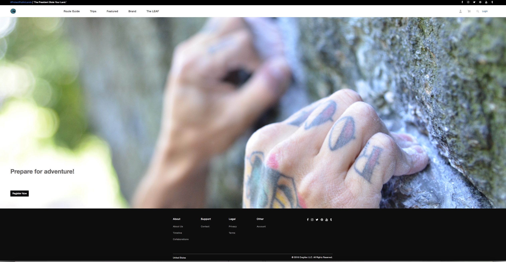
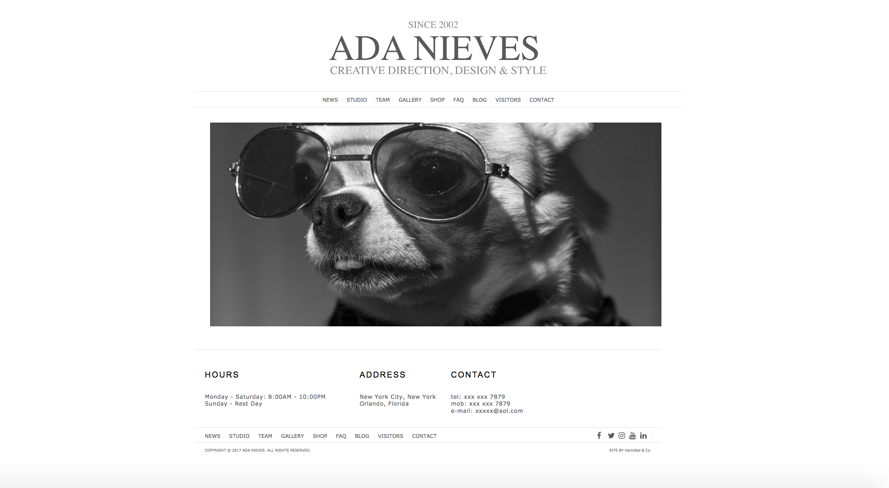

Background
About
Projects
-
NYC Direct Leads Live
HTML, CSS, JavaScript, Bootstrap, Python
Marketing platform for a real estate start-up. NYC Direct Leads is an NYC-based agency that provides real-time industry leads ready to be converted to qualified prospects. We produce the highest quality leads and get the greatest results.
-

CragVan Github
HTML, CSS, JavaScript, Bootstrap, PHP, MySQL
A climbing web application to help organize upcoming trips and events. Written with PHP and connects to MySQL.
-

Ada Nieves Github
HTML, CSS, JavaScript, Bootstrap
Designed and engineered new platform for local pet business using Javascript and Bootstrap.
GIT Contributions
-

Code For Social Good Live | Github
HTML, CSS, Sass, Angular 4
Code for Social Good is a volunteer community that seeks to promote social welfare by supporting non profits in need. Code for Social Good is made up of volunteers from across the tech industry. Contributed directly to Code for Social Good's front end by updating, building and stylizing animated buttons and profile card page based on wireframe.
-
Work Experience
-
Software Engineer | Intern Sumall
August 2017 - Present< 1 year
- Develop new user-facing interface for Sumall.
- Create reusable code. Ensure technical feasibility of UI/UX designs.
- Optimize application for maximum speed and scalability. Assure all user input validated before submitting to backend. Collaborate with product & design team.
-
Web Developer | Data Analytic Consultant
Oct 2014 - Present4 years
- Full Stack Web Developer| NYC Direct Leads: engineered new marketing platform for real estate startup.
- Freelance Writer: content creation for international Social Media start up in pet space.
- Front End Web Developer | Ada Nieves: engineered and designed new platform for local pet business.
- Data Analysis: provided analytics and migration services for a local private organization.
-
Director | Senior Data Manager League of American Orchestras
Jun 2016 - Mar 2017 10 months
- Lead analysis and functional specifications of ‘as-is’ and ‘to-be’ business models, executing complex operational, financial, and statistical analysis
- Performed analytics on relational dataset to identify root causes, trends and recommend priorities communicating findings to stakeholders and leadership team
- Conducted analysis to identify variances between system capabilities and business requirements.
- Consolidated various sources of risk management financial and clinical data to produce reports for internal and external use.
- Managed and analyzed data from a frequency and severity perspective for publication and external use including ‘Orchestra Facts 2006-2014’.
- Managed all firm data vendor relationships and sourcing new datasets across LOB while supporting business growth
- Developed and executed architecture, policy, practices and procedures that properly managed data lifecycle
- Managed and executed system platform migration including data cleansing, QA and data migration
- Provided contextual intelligence across the solution stack. Improved data access consistently achieving service level targets. Automated and simplified operations. Accommodated new initiatives without expanding infrastructure. Facilitated alignment, consistency and governance. Defined business policies and standards.
Skills
-
Web DevelopmentHTML CSS MySQL PHP Java Wordpress Git Github JavaScript jQuery BeautifulSoup Angular.js React.js Sass Python Bottle
-
Data AnalysisR Excel Python
Other Experience
-
Vice President | Senior Portfolio Officer BNY Mellon
Jun 2008 - Oct 20146 years 4 months
- Managed over $500 Million in individual and corporate accounts.
- Performed risk analysis for potential clients using financial statements, earnings calls, conversations with CEOs and CFOs, and trade receivable reports.
-
Vice President | Senior Fiduciary Officer Citibank
Jun 2005 - Jun 2008 3 years
- Served on senior management committees that monitored and reviewed asset allocation and determined discretionary actions under governing document.
- Managed internal and external audits consistent with policies and procedures to attain top rating from regulators.
- Conducted development of the remediation of product risk management procedures and processes as part of client service improvment initiative.
-
Vice President | Senior Fiduciary Officer Deutsche Bank
Jun 1999 - Jun 2005 6 years
- Conducted complex analysis to identify and place controls for high risk accounts.
- Executed due diligence and reference checks to complete AML, BSA, and KYC process.
Education
-
Hunter College
Oct 2017 - Jun 2018
Full Stack Web Development Certification
-
New York University
Certificate in Financial Planning
-
American Banker's Association National Trust School
Certificate in Trust Administration
-
MBA in Banking & Finance
Dowling Collge -
BA in Business Management & International Studies
SUNY | Brockport College
Volunteer Work
-
Lead Instructor, ScriptEd
Nov 2017 - Present
ScriptEd equips students in under-resourced schools with the fundamental coding skills and professional experiences that together create access to careers in technology.
- Teach HTML, CSS and JavaScript to high school students in East Harlem, NY
- Work one-on-one with students to develop their fundamental coding skills and inspire them to pursue careers in tech.
-
Adoption Processor, Ruff Dog Rescue NE
Ruff Dog Rescue NE is a non profit facility & foster based rescue headquartered in Pennsylvania with adoption services througout the north east.
-
Rescue Coordinator, Almost Home Daschund Rescue - AHDRS
Almost Home Daschund Rescue Society is a network of independent rescue volunteers who work together to rescue abandoned, abused, and/or unwanted daschunds. AHDRS provides medical and behavioral care prior to placing them in appropriate homes.
-
Photographer, AMA Animal Rescue
Angels for Mistreated Animals (AMA) is a foster based animal rescue organization founded in Brooklyn, NY. It's mission is to safeguard animals who have experienced the most severe cases of abuse, neglect, and abandonment.
-
Lost & Found Coordinator, ASPCA
The ASPCA's mission is to provide effective means for the prevention of cruelty to animals throughout the United States.
Interests
-
Climbing, Running, Coding & Rescuing Animals